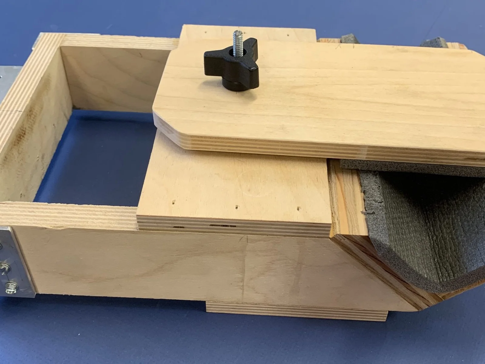
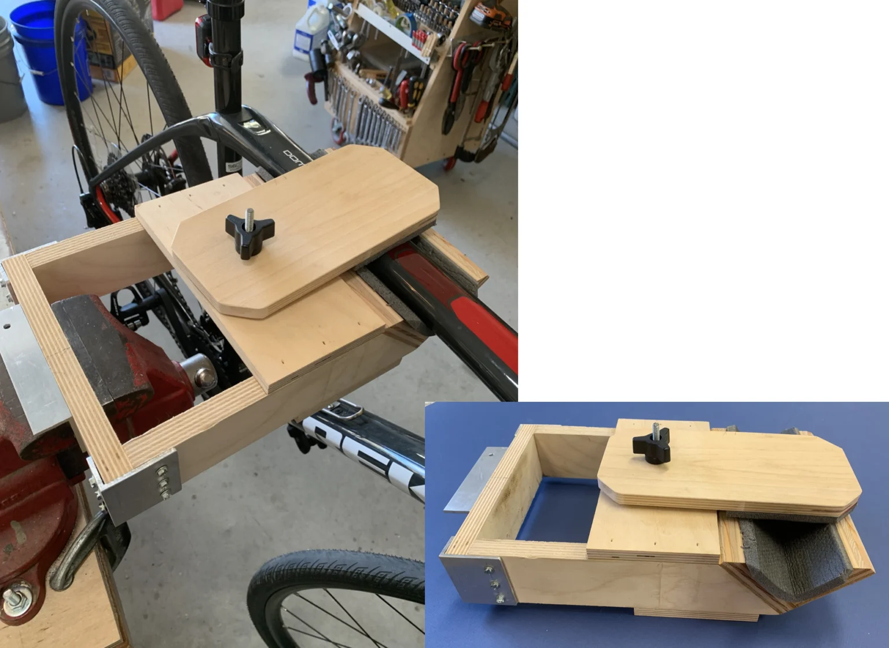
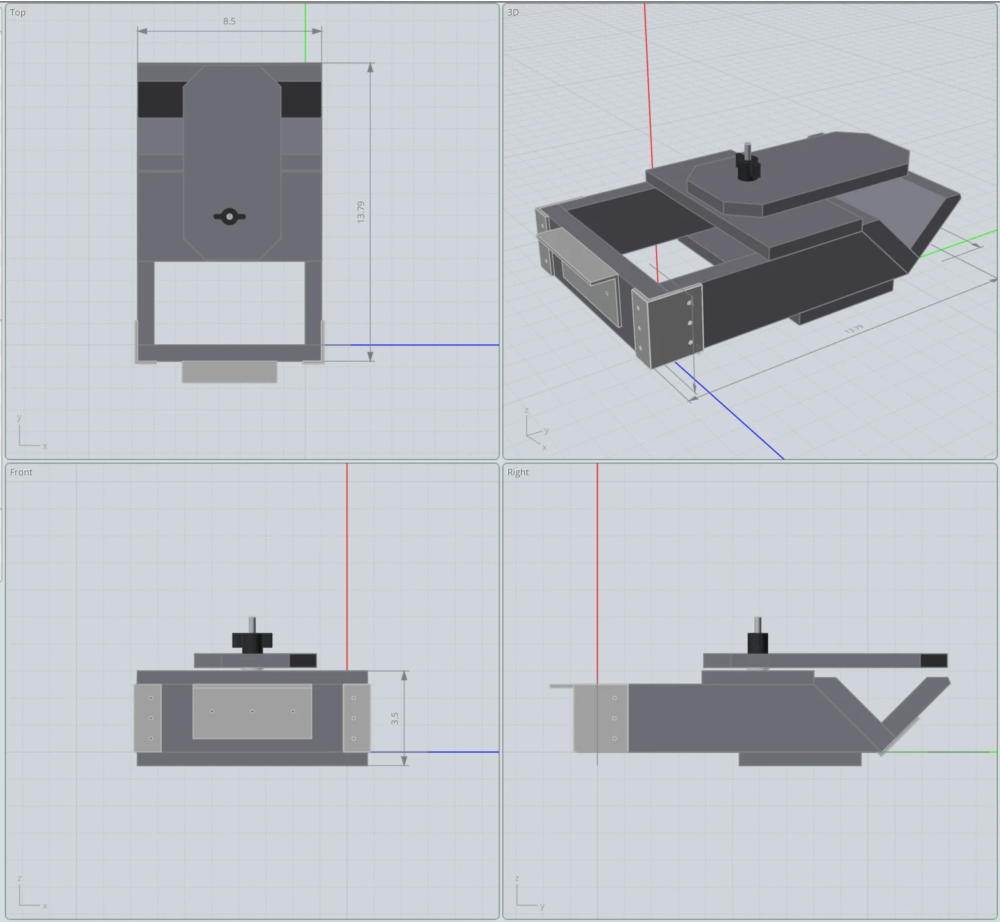

Bicycle Maintenance Clamp
Includes the STEP CAD file and instructions PDF.
{kind=link}

A vise-mounted, padded V-shaped bicycle clamp for chain oiling, cable adjustments, and other maintenance — safe for a carbon frame. Free 3D CAD file available.
I needed a simple, portable bicycle stand providing a stable platform for occasional bicycle maintenance, e.g. chain oiling, cable adjustments, bike computer battery changes, etc. My road bike has a carbon frame, so the clamping/holding platform needed to be secure enough to hold the bike stationary without damaging the carbon frame. So I made this vise-mounted bike clamp that quickly clamps into my workshop vise, and the padded, V-shaped bike rest secures the bike while avoiding any frame damage.
The setup is quick and easy. Simply place the back of the bicycle clamp in your vise and tighten. The aluminum L-bracket on the clamp back provides a mechanical stop which rests on the top of the vise jaws. Now rotate the top clamping piece out of the way, place the bicycle onto the clamp V-shaped rest, and then rotate the top piece over the bicycle frame and tighten. By slightly compressing the foam padding, the bicycle is held securely without risking damage to the carbon frame.
Tip… check your vise location and surrounding area for adequate space to mount your bicycle. If needed, lengthen or shorten the clamp to best suit your work space.
Supplies
Materials & Hardware
- Bottom — 1/2″ x 4 1/2″ x 8 1/2″ plywood, 1
- Back — 3/4″ x 2 1/2″ x 8 1/2″ plywood, 1
- Side — 3/4″ x 2 1/2″ x 10 1/2″ plywood, 2 (45° cut, top edge 8.016″)
- V-rest side — 3/4″ x 3.14″ x 8 1/2″ plywood, 1 (45° cut top edge, inside edge 2.4″)
- V-rest side — 3/4″ x 3.9″ x 8 1/2″ plywood, 1 (45° cut top edge, inside edge 3.14″)
- Top — 1/2″ x 4 1/8″ x 8 1/2″ plywood, 1
- Clamping plate — 1/2″ x 4 1/2″ x 9″ plywood, 1 (45° corner cuts optional)
- Corner bracket — 2 1/2″ aluminum, 2 (1/8″ x 1″ x 2″ L-bracket stock)
- V-rest bracket — 6 13/16″ aluminum, 1 (1/8″ x 1″ x 2″ L-bracket stock)
- Back bracket — 4 3/8″ aluminum, 1 (1/8″ x 1″ x 2″ L-bracket stock)
- Stove bolt, hex head — 1/4-20 x 2 1/2″ steel, 1
- T-nut — 1/4-20 steel, 1
- Flat washer — 1/4″ steel, 1
- Through-hole threaded knob — 1/4″-20, plastic with metal insert, 1
- Closed-cell foam pad, cut to fit the V-rest and clamping plate
Tools
- Workshop vise
- Drill
- Hot glue gun (foam pad)
Pulled from the instructions PDF’s parts list — see the downloadable PDF for the full exploded-view drawing.
Construction Tips
The bicycle clamp is an easy project to complete and uses readily available materials. I already had the wood and aluminum angle stock, so I made L-brackets to reinforce the corners. Given the light weight of most modern bicycles, I suspect the clamp would be strong enough without the corner supports. If you decide not to use the aluminum corner supports, I recommend you use both glue and screws (instead of nails) to join the wood pieces. You don’t want your expensive bicycle crashing onto the floor.
The one piece of the clamp not depicted in the drawings is the 1/2″ thick closed-cell foam that I used to pad the V-shaped bicycle rest. I had parts of a closed-cell backpacking ground pad which I cut and hot glued to the V-shaped rest and to the underside of the top clamping piece. The pad provides adequate support for the bicycle and minimizes the chance of damaging the carbon frame.
Tip… The screws I used for the brackets are not listed in the parts list. If you decide to use similar brackets, #8 screws seemed to work fine. But select your screws first and then drill the correct sized holes in your brackets — the exact hole positions aren’t critical.
Image Gallery

